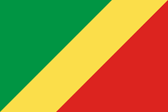

About Me
Hello! My Name is: aristid wilbrech ELENGA-ASSEKA , i am from congo brazzaville and i come from a family of seven persons. i get my higth school diploma at henri lopes de gamboma school. i get my pathway connect certificat at byu-pathway worldwide and now i am pursuying my school at byu-idaho university as a web developper. my strongths are: i am honest; ponctuat; quick learner and hardworking. currentely i am living at brazzaville. thanks for the understanding.
republic of congo, brazzaville
republic of congo, the republic of congo(olso known as congo brazzaville) is a country located in central africa, bordered by gabon to the west, bordered by cameroon and the central africa to the north, the democratic republic of congo to the east and south, and the atlantic ocean to the southwest. its capital and largest city is brazzaville. with a popilation around 5.5millions poeple, the republic of the congo is rich in natural resources, particulary oil, which is the ackbone of its economy. the country also has vast rainforest and is home to diverse widlife, including gorillas and forest elephants.